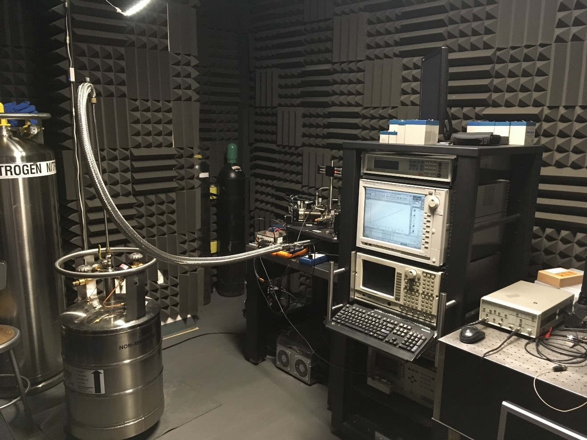

Low-Frequency Electronic Noise Measurements
Low-frequency noise with the spectral density inversely proportional to frequency is a ubiquitous phenomenon, which was discovered in vacuum tubes, and later observed in a wide variety of electronic materials and devices. This type of noise, commonly referred to as 1/f noise, flicker or excess noise, dominates the spectrum at f< 100 kHz. The importance of 1/f noise for electronics motivated numerous studies of its physical mechanisms and methods for its reduction. Despite more than a century of research, 1/f noise remains controversial phenomenon with debates continuing about its origin and mechanisms. The general name for this intrinsic noise type does not imply the existence of a common physical mechanism giving rise to all its manifestations. It is now accepted that different fluctuation processes can be responsible for 1/f noise in various materials and devices. For this reason, practical applications of a new material system usually require a thorough investigation of the specific features of the low-frequency noise in this material and developing methods for its reduction. While low-frequency noise is detrimental in electronic devices, it can also be a valuable material characterization metric, which contains a wealth of information about carrier – trap dynamic and relaxation processes in the system. Low-frequency noise measurements have been an important reliability testing tool for interconnects in Si CMOS technology. Professor Balandin’s Nano-Device Laboratory (NDL) is fully equipped for the low-frequency electronic noise testing in a wide temperature range (see Figure). One can read more about low-frequency noise in the book Noise and Fluctuations Control in Electronic Devices edited by A. A. Balandin
Intrinsic Noise Types and 1/f Noise Fundamentals
Various types of the electronic noise are commonly classified into four intrinsic noise types with distinctively different physical mechanisms (see Figure). They are (i) thermal or Johnson noise, (ii) shot noise, (iiii) generation-recombination (G-R) noise, and (iv) flicker or 1/f noise. The spectral density of thermal noise is given by the Nyquist’s formula. The spectral density of shot noise is given by the Schottky’s theorem. Thermal noise is a manifestation of the randomness of thermal motion while the shot noise originates from the discreetness of charges. Both noise types are called white noise because their spectral density does not depend on the frequency f. G-R noise is observed at low f and its spectral density is described by the Lorentzian. Unlike other intrinsic noise types, 1/f noise can originate from different fluctuation process either in the charge carrier number or mobility. The most common description of 1/f noise, dominated by the carrier number fluctuations, stems from the observation that a superposition of individual G-R noise sources with the lifetime distributed on a logarithmically wide time scale. A commonly accepted McWhorter’s model state that 1/f noise results from the overlap of many Lorentzian bulges with certain time constants. The absence of a single noise mechanism complicates an introduction of a meaningful figure of merit for 1/f noise. Although 1/f noise dominates the spectrum at low-frequency it up-converts owing to the unavoidable non-linearities and makes up the main contribution to the phase noise of communication systems and sensors (see Figure).

Low-Frequency Noise in Graphene
Graphene is a unique material system in the low-frequency noise context. From one side, it is an ultimate surface where conduction electrons are exposed to the traps, e.g. charged impurities, in a substrate or environment, which can result in the strong carrier number fluctuations. From the other side, it is a metal, where mobility fluctuations owing to scattering centers in the substrate or surface can also make a strong contribution to 1/f noise. In addition to the scientific significance of investigating 1/f noise in 2D system like graphene, there are practical reasons why 1/f noise characteristics of graphene are particularly important. They are related to graphene’s physical properties and envisioned applications. The most promising electronic applications of graphene are likely those that are not strongly hampered by the absence of the energy band gap but rather rely on graphene’s exceptionally high electron mobility, thermal conductivity, saturation velocity, and possibility of tuning the carrier concentration with the gate over an exceptionally wide range. The applications that fall into this category are those in chemical and biological sensors, ultra-fast transistors for communications, optoelectronic devices, interconnect wiring and various electrodes. For all mentioned applications, 1/f noise is a crucial performance metric. The sensitivity of amplifiers and transducers used in sensors is ultimately limited by flicker noise. The accuracy of a system limited by 1/f noise cannot be improved by extending the measuring time. Although 1/f noise dominates the spectrum only at low frequencies, its level is important for communications at high frequencies because 1/f noise is the major contributor to the phase noise of the oscillating systems. The phase noise of an oscillator determines a system’s ability to separate adjacent signals. The up-conversion of 1/f noise is a result of unavoidable non-linearities in the electronic systems, which leads to the phase noise contributions. These considerations explain the need in detail investigation of 1/f noise in graphene devices (see Figure). More about low-frequency noise in graphene devices can be read in the review. A. A. Balandin, “Low-frequency 1/f noise in graphene devices,” Nature Nano (2013).